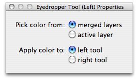

Using the eyedropper tool
The eyedropper tool is capable of lifting colors off your image for use in drawing. By default, when you click, it samples a merged copy of the image at the cursor's position and sets it as the active color for whichever mouse button you used. But this can be changed in the eyedropper's tool properties window:

The first option allows you to choose between a merged sample or just the color in the active layer. The former will pick up the color such that if you drew it next to the current position, it would look exactly the same with respect to layer blending and so on. The latter simply picks up the unadulterated color at the mouse's position in the active layer.
The second option allows you to choose which mouse button will now place the color you've picked up. The default is the same as the eyedropper itself, but you can change this to have workflows wherein you pick up colors with the right mouse button and then immediately draw them with the left.
To quickly use the eyedropper:
Because the eyedropper is such a handy tool to have around, we've added a key shortcut that allows you to use it even more smoothly. If you press and hold the option key, Pixen will change the active tool to the eyedropper until you release it; then it will reactivate the tool you had before. This is only true while using tools for which the option key doesn't do something different (like the rectangle and ellipse tools).
See also
Changing tool properties
Assigning a tool to the right mouse button
Tools